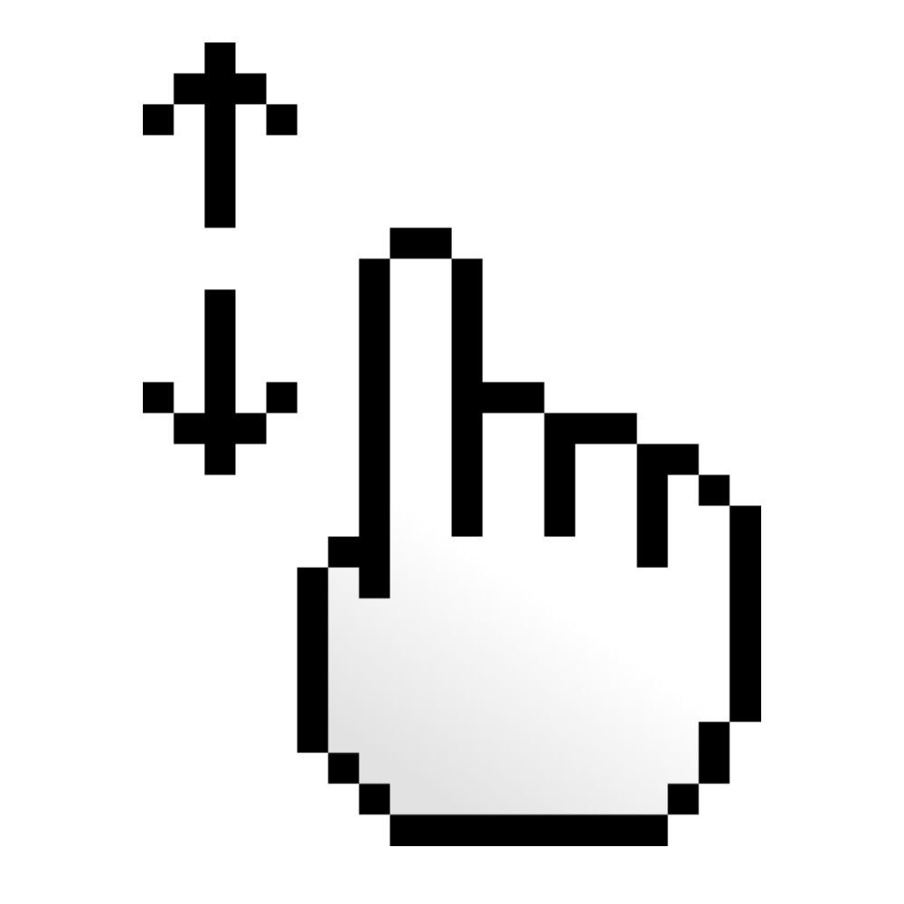

Put a clock 0:00 on your scroll

.App blockers and screen time limits don't work. And you know it.
-
•
The Override Loop: When a limit popup appears, you don't put the phone down. You just tap 'Ignore'. You haven't trained your mind, only your thumb.
>
- • The Rebound Effect: Forcing yourself to quit triggers reactance. The exact second a block lifts, your brain goes into overdrive. You doom-scroll twice as fast to make up for lost time.
The psychological shift: Active vs. Passive Use
Yale psychology research reveals a vital truth: Being social online isn't the problem. The problem is autopilot.
ACTIVE USE (Healthy Connection)
Messaging friends • Organizing meetups • Sharing photos
PASSIVE CONSUMPTION
Endlessly scrolling algorithm feeds. The primary driver of declining wellbeing and screen-time guilt.
Enter self-realization.
You don't need a parent locking your apps. You need a mirror. Ticker runs a quiet Live Activity in your Dynamic Island to show your elapsed time. No popups. No blocking. Just absolute awareness, letting you make your own choices.
Ticker
You've been on this page for
0 seconds.
Imagine having that awareness every time you open Instagram, TikTok, or Twitter. No locks. No guilt. Just a quiet mirror.
We're rolling out early access in weekly cohorts. Enter your email and we'll save your spot.